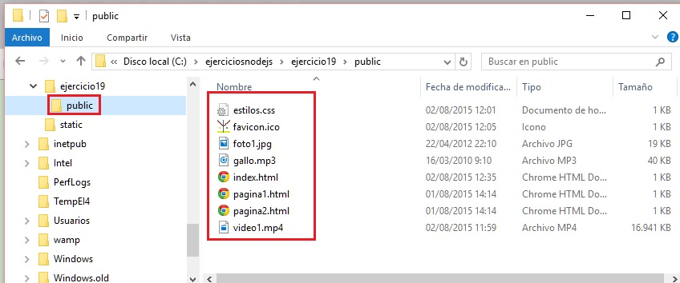

En el concepto anterior vimos los pasos para implementar una aplicación web mínima utilizando el Framework Express.
Ahora vamos a ve que debemos agregarle a dicha aplicación para que nuestro servidor retorne al navegador archivos estáticos con distintos formatos como podrían ser imágenes, archivos HTML, js, videos mp4 etc.
Vamos a implementar el mismo problema que resolvimos anteriormente con Node.js sin utilizar un framework.
Problema
Confeccionaremos un sitio que contenga una serie de archivos html, css, jpg, mp3, mp4 e ico.
Crearemos un directorio llamado 'ejercicio19' y dentro de este otro directorio interno llamado 'public' donde se deben disponer todos los archivos html,css, jpg, mp3, mp4 e ico (al final de la página hay un enlace para descargar este proyecto que contiene todos estos archivos):

Ahora procedemos a instalar el framework Express para nuestro nuevo proyecto (tengamos en cuenta que en casa proyecto debemos instalarlo)
Para la instalación vimos que desde la línea de comando nos ubicamos en la carpeta de nuestro proyecto (ejercicio19) y utilizamos la herramienta npm:
c:\ejerciciosnodejs\ejercicio19>node install express
Ya tenemos instalado la última versión del framework Express y pasamos a crear el archivo app.js:
var express=require('express');
var app=express();
app.use(express.static(__dirname + '/public'));
var server=app.listen(8888,function(){
console.log('Servidor web iniciado');
});
Ya podemos arrancar nuestro programa desde la línea de comandos estando en el directorio de nuestro proyecto:
node app
Desde el navegador hacemos las peticiones al servidor local y podemos comprobar que nos retorna los distintos recursos enumerados dentro de cada página (imágenes, audios, videos, hojas de estilo etc.):

Si vemos para poder servir archivos estáticos solo tenemos que llamar al método use y dentro llamar al método static de la variable express con un string que indique el path donde se encuentran los archivos estáticos.
La variable global '__dirname' almacena el path donde se encuentra la aplicación Node.js propiamente dicha, en nuestro ejemplo se encuentra en c:\ejerciciosnodejs\ejercicio19
Le concatenamos la subcarpeta donde se almacenan los archivos estáticos (recordemos que creamos una carpeta llamada public donde localizamos los archivos estáticos):
app.use(express.static(__dirname + '/public'));
Este proyecto con Express lo puede descargar en un zip con todos los archivos desde este enlace : ejercicio19